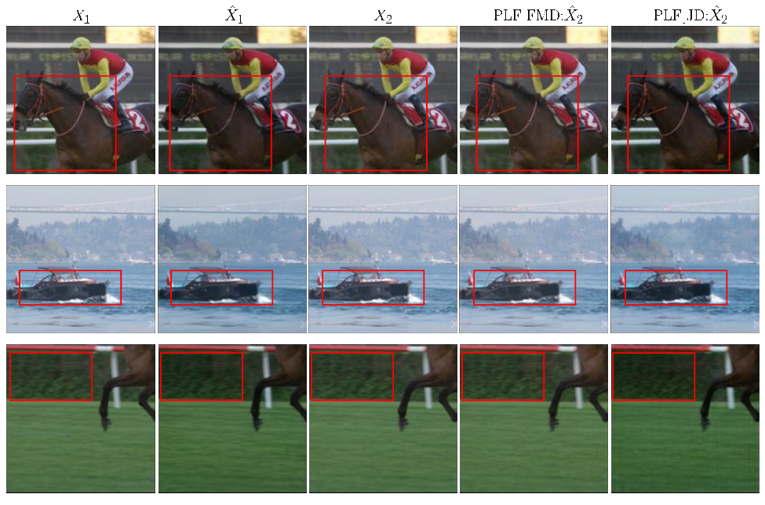
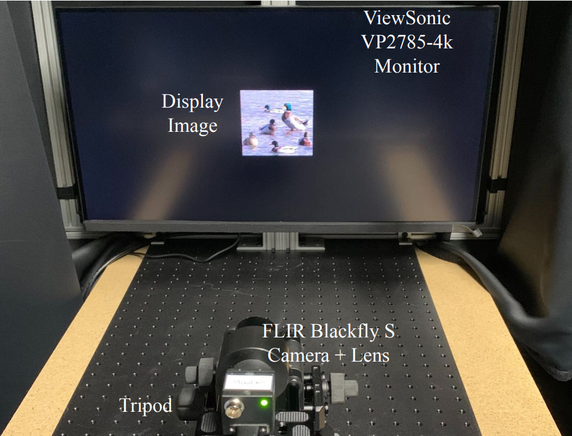
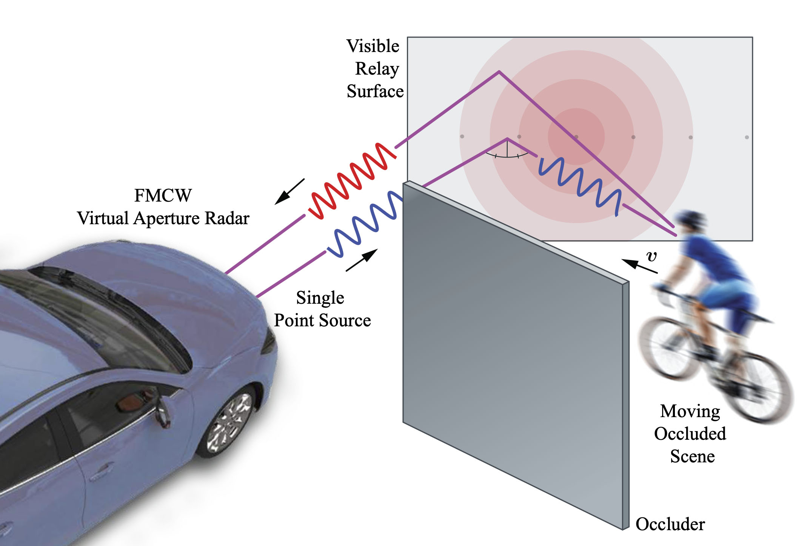
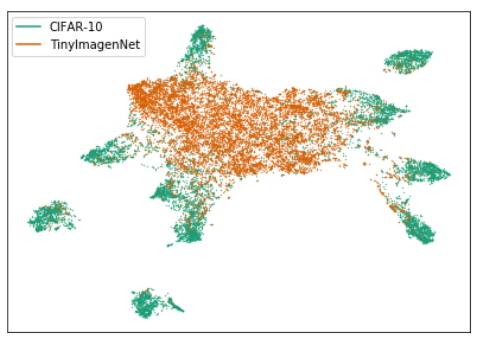
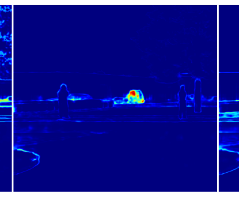
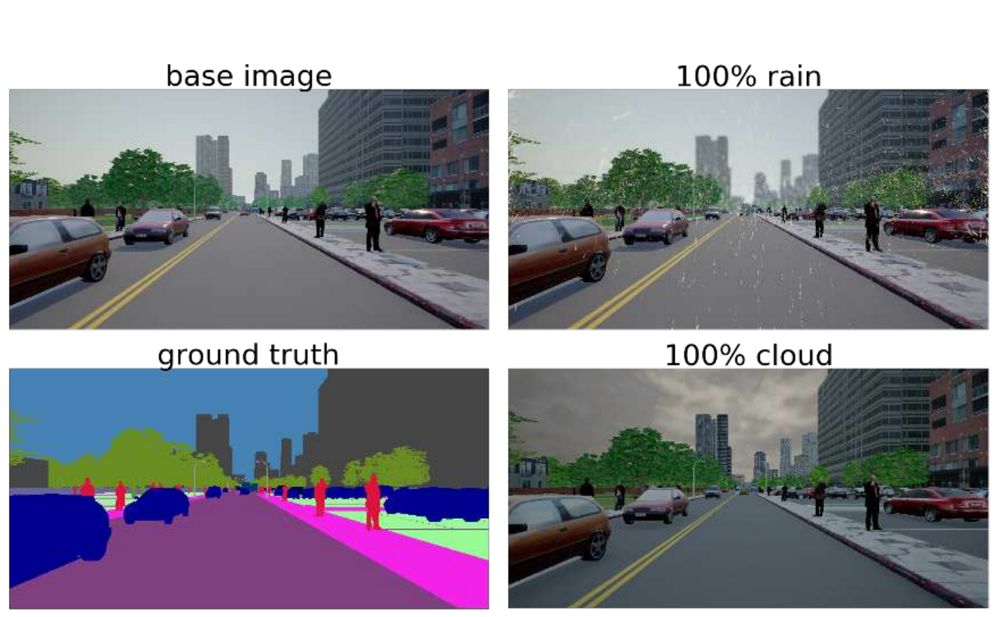
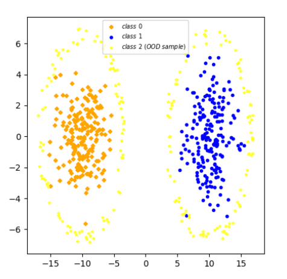
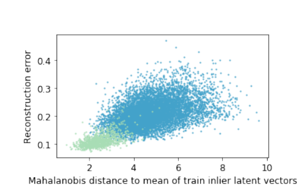
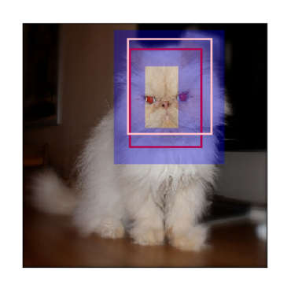
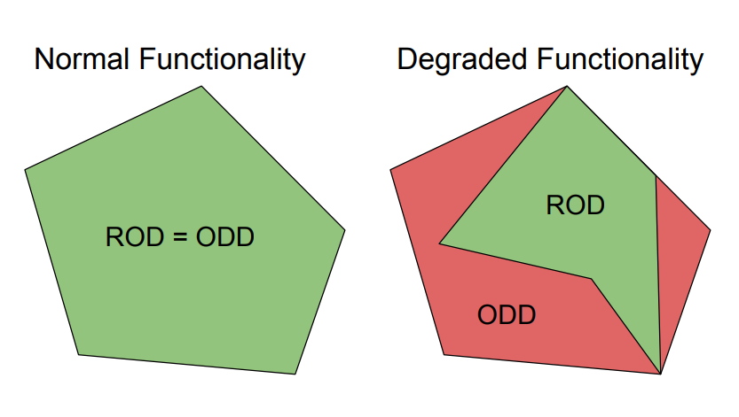

|
I am a PhD student at the University of Toronto, where my current research focuses on information theory and statistical machine learning. My advisor is Prof. Ashish Khisti. Previously, I was an AI Research Engineer at LG Electronics, working on applied ML for automated checkout and situated reasoning. Before that, I was a computer vision researcher at Algolux, where I worked with Felix Heide and Fahim Mannan on Adversarial Robustness and NLOS Imaging for self-driving cars. I obtained my Master’s Degree from the University of Waterloo, where I was advised by Prof. Krzysztof Czarnecki and Dr. Rick Salay. My thesis was about Bayesian deep learning, distillation and computer vision. I also spent some time working on anomaly detection and requirement engineering. Email / CV / Google Scholar / Twitter / Github |
|
|
I'm interested in probability, optimization and deep learning. Currently, I am interested in topics intersection between information theory, sampling and deep learning. My long-term research goal is develop reliable AI. |
|  |
Sadaf Salehkalaibar*, Buu Phan*, Jun Chen, Wei Yu, Ashish Khisti, Conference on Neural Information Processing Systems , 2023 We provide a information-theoretic analysis on perceptual video compression. Surprisingly, our results show that preserving temporal consistency comes with a cost of higher distortion! |

|
Sadaf Salehkalaibar, Buu Phan, Ashish Khisti, Wei Yu, Biennial Symposium on Communications (BSC) , 2023 We provide a information-theoretic analysis on the conditional perceptual metric for image compression. |
|  |
Buu Phan, Felix Heide, Fahim Mannan CVPR, 2021 project page / Paper / video / Contact me to reproduce the results on your camera. We proposed a new kind of adversarial attack by targeting the ISP and camera optics. Our method produces real-world adversarial scenes without relying on image augmentation. |
|  |
Nicolas Scheiner, Florian Kraus, Fangyin Wei, Buu Phan, Fahim Mannan, Nils Appenrodt, Werner Ritter, Jürgen Dickmann, Klaus Dietmayer, Felix Heide, CVPR, 2020 project page / Paper / video / code / We show how to scale up NLOS imaging technique in real-world using radar. The method can reliably detect and track NLOS pedestrian and cyclist. |
|  |
Vahdat Abdelzad, Krzysztof Czarnecki, Rick Salay Taylor Denounden, Sachin Vernekar, Buu Phan Arxiv, 2019 Paper / code / We show that OOD images can be detected by applying the one-class SVM on early-layer's embeddings. The results outperforms several baseline approaches on MNIST, CIFAR and Tiny-Imagenet. |
|  |
Buu Phan, Samin Khan, Rick Salay, Krzysztof Czarnecki, (Best paper) Workshop on Artificial Intelligence Safety Engineering - SAFECOMP , 2019 Paper We emperically show that Bayesian deep networks captures some notions of uncertainty that are similar to human's view of uncertainty. Contrary to expectation, we also find that the estimated aleatoric uncertainty from Bayesian deep models can be reduced with more training data. |
|  |
Samin Khan, Buu Phan, Rick Salay, Krzysztof Czarnecki, CVPR Workshop , 2019 Paper/ Dataset We provide a tool for synthetic self-driving dataset generation. Our tool can simulate adverse environmental condition such as rain and cloud. We also provide some analysis regarding distribution shift on this dataset. |
|  |
Sachin Vernekar, Ashish Gaurav, Taylor Denouden, Buu Phan, Vahdat Abdelzad, Rick Salay, Krzysztof Czarnecki, Safe ML Workshop, ICLR , 2019 Paper/ Code We show some theoretical disadvantages of using classifier for out of distribution detection. We show that training a classifier for "unseen" class can leverage the issue. |
|  |
Taylor Denouden, Rick Salay, Krzysztof Czarnecki, Vahdat Abdelzad, Buu Phan, Sachin Vernekar. Arxiv , 2018 Paper/ Reconstruction autoencoder was one of the go-to approach for out-of-distribution detection. The idea is to use the reconstruction error for OOD score. Nevertheless, in many cases, we observe that OOD images are perfectly reconstructed. This paper demystifies the above phenomenon from the view of PCA. |
|  |
Buu Phan, Rick Salay, Krzysztof Czarnecki, Vahdat Abdelzad, Taylor Denouden, Sachin Vernekar. Neurips Bayesian Deep Learning Workshop , 2018 Paper/ We observe that Bayesian Deep Networks do not provide well-calibrated regression uncertainty. In this paper, we address this problem for the single-object localization task by adapting an existing technique for calibrating regression models. |
|  |
Ian Colwell, Buu Phan, Shahwar Saleem, Rick Salay, Krzysztof Czarnecki. IEEE Intelligent Vehicles Symposium , 2018 Paper/ We proposes an approach and architectural design for achieving maximum functionality in the case of system failures. |